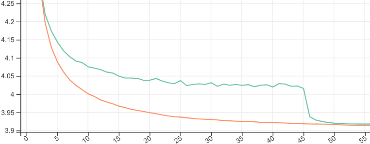

Practitioner's Guide to Two-Tailed Averaging
Tags: ai, Date: 2022-12-06
This is a complement to the Two-Tailed Averaging paper, approached from the direction of what I think is a fairly common technique: averaging checkpoints.
We want to speed up training and improve generalization. One way to do that is by averaging weights from optimization, and that's a big win (e.g. 1, 2, 3). For example, while training a language model for the down-stream task of summarization, we can save checkpoints periodically and average the model weights from the last 10 or so checkpoints to produce the final solution. This is pretty much what Stochastic Weight Averaging (SWA) does.
Problems with SWA
There is a number of problems with SWA:
The averaging length (e.g. 10) must be chosen to maximize performance on summarization.
A naive way to find the averaging length is to do a single training run and then search backwards extending the average one checkpoint at a time, which needs lots of storage and computation. Another option, doing multiple training runs each told to start averaging at a predefined point pays a steep price in computation for lower storage costs.
To control the costs, we can lower checkpointing fequency, but does that make results worse? We can test it with multiple training runs and pay the cost there.
Also, how do we know when to stop training? We ideally want to stop training the language model when summarization works best with the optimal averaging length at that point. That means the naive search has to be run periodically making it even more expensive.
In summary, working with SWA is tricky because:
The averaging length is a hyperparameter that's costly to set (it is coupled with other hyperparameters especially with the length of training and the learning rate).
Determining the averaging length after training is both costly (in storage and/or computation) and suboptimal (can miss early solutions).
These are the issues Two-Tailed Averaging tackles.
Two-Tailed Averaging
The algorithm needs storage for only two sets of weights (constant storage cost) and performance (e.g. of summarization) to be evaluated periodically. In return, it provides a weight average of approximately optimal length at all optimization steps. Now we can start training that language model, periodically evaluating how the averaged weights are doing at summarization. We can stop the training run any time if it's getting worse.
This is how Two-Tailed Averaged (orange) compares to SWA (green) tuned to start averaging at the point that's optimal for final validation loss:

The Algorithm
The core algorithm maintains two weight averages. Both averages are over the most recent weights weight produced by the optimizer, but they differ in length (i.e. how many weights they average). As the optimizer produces new sets of weights, they are added to both averages. We periodically evaluate the performance of our model with each average. If the short average (the one that currently has fewer weights averaged) does at least as well as the long average according to some arbitrary evaluation function, then we empty the long average, which will now be the short one.
# Initialize the short (s, sw) and long averages (l, lw). s and l are
# the number of weights averaged (the "averaging lengths"). sw and lw
# are the averaged weights.
s, sw, l, lw = 0, 0, 0, 0
# Update the averages with the latest weights from the optimizer.
def update_2ta(w):
global s, sw, l, lw
assert s <= l
s, sw = s+1, (s*sw + w)/(s+1)
l, lw = l+1, (l*lw + w)/(l+1)
# Evaluate the model with the short-, the long-, and the
# non-averaged weights. Based on the results, adapt the length of
# the averages. Return three values: the best evaluation results,
# the corresponding weights and averaging length.
def evaluate_2ta(w, evaluate):
global s, sw, l, lw
# Evaluate the non-averaged weights w, the short and the long average.
f1, fs, fl = evaluate(w), evaluate(sw), evaluate(lw)
is_first_eval = (s == l)
# If the short average is better, then *switch*: empty the long
# average, which is now the shorter one.
if fs <= fl:
s, l, lw, fl = 0, s, sw, fs
if f1 <= fl:
# The non-averaged weights performed better. This may happen in
# the very early stages of training.
if is_first_eval:
# If there has never been a switch (s == l), then f1 is probably
# still improving fast so reset both averages.
s, l = 0, 0
return f1, w, 1
else:
# Return the long average.
return fl, lw, lIn addition to the core algorithm, the code above has some extra logic to deal with the non-averaged weights being better than the averaged ones.
Let's write a fake a training loop that optimizes $f(x)=x^2$.
import random
def test_2ta_simple():
def f(w):
return w**2
def df_dw(w):
# Simulate stochasticity due to e.g. minibatching.
return 2*w + random.uniform(-1.0, 1.0)
lr = 0.5
w = 3.14
for i in range(1, 2001):
w = w - lr*df_dw(w)
update_2ta(w)
if i % 100 == 0:
f_2ta, w_2ta, l_2ta = evaluate_2ta(w, f)
print(f'i={i:4d}: f(w_i)={f(w):7.3f},'
f' f(w_2ta)={f_2ta:7.3f}, l={l_2ta:4d}')We added some noise to the gradients in df_dw to make it more like
training a neural net with SGD. Anyway, we take 2000 optimization
steps, calling update_2ta on most but calling
update_and_evaluate_2ta every 100 steps. Running
test_2ta_simple, we get something like this:
i= 100: f(w_i)=0.108, f(w_2ta)=0.000, l= 100
i= 200: f(w_i)=0.011, f(w_2ta)=0.000, l= 200
i= 300: f(w_i)=0.098, f(w_2ta)=0.000, l= 200
i= 400: f(w_i)=0.085, f(w_2ta)=0.000, l= 300
i= 500: f(w_i)=0.221, f(w_2ta)=0.000, l= 200
i= 600: f(w_i)=0.185, f(w_2ta)=0.000, l= 300
i= 700: f(w_i)=0.019, f(w_2ta)=0.000, l= 400
i= 800: f(w_i)=0.180, f(w_2ta)=0.000, l= 500
i= 900: f(w_i)=0.161, f(w_2ta)=0.000, l= 600
i=1000: f(w_i)=0.183, f(w_2ta)=0.000, l= 700
i=1100: f(w_i)=0.057, f(w_2ta)=0.000, l= 800
i=1200: f(w_i)=0.045, f(w_2ta)=0.000, l= 900
i=1300: f(w_i)=0.051, f(w_2ta)=0.000, l=1000
i=1400: f(w_i)=0.010, f(w_2ta)=0.000, l= 900
i=1500: f(w_i)=0.012, f(w_2ta)=0.000, l=1000
i=1600: f(w_i)=0.168, f(w_2ta)=0.000, l=1100
i=1700: f(w_i)=0.001, f(w_2ta)=0.000, l=1200
i=1800: f(w_i)=0.020, f(w_2ta)=0.000, l=1300
i=1900: f(w_i)=0.090, f(w_2ta)=0.000, l=1400
i=2000: f(w_i)=0.115, f(w_2ta)=0.000, l=1500In the above, f(w_i) is the loss with the non-averaged weights,
f(w_2ta) is the loss with the weights provided by 2TA, and l is the number of weights averaged.
We see that with the high, constant learning rate, SGD keeps jumping
around the optimum, and while 2TA does the
same, its jitter is way smaller (it's beyond the three significant
digits printed here). Also, the length of the average increases
almost monotonically but not quite due to the switching logic.
OK, that was easy. Let's now do something a bit more involved, where the function being optimized changes. We will change the loss function to $f(x) = (x-m)^2$ where $m$ is set randomly every 400 steps. We will deal with this non-stationarity by resetting the long average if it has not improved for a while.
def reset_2ta_long_average():
global s, sw, l, lw
s, sw, l, lw = 0, 0, s, sw
def test_2ta_non_stationary():
optimum = 0
def f(w):
return (w-optimum)**2
def df_dw(w):
# Simulate stochasticity due to e.g. minibatching.
return 2*w - 2*optimum + random.uniform(-1.0, 1.0)
lr = 0.5
w = 3.14
best_f = float("inf")
best_iteration = 0
for i in range(1, 2001):
w = w - lr*df_dw(w)
update_2ta(w)
if i % 400 == 0:
optimum = random.uniform(-10.0, 10.0)
print(f'setting optimum={optimum:.3f}')
if i % 100 == 0:
f_2ta, w_2ta, l_2ta = evaluate_2ta(w, f)
print(f'i={i:4d}: f(w_i)={f(w):7.3f},'
f' f(w_2ta)={f_2ta:7.3f}, l={l_2ta:4d}',
end='')
if l_2ta > 1 and f_2ta < best_f:
best_f = f_2ta
best_iteration = i
print()
elif best_iteration + 1 <= i:
# Reset heuristic: the results of the long average have not
# improved for a while, let's reset it so that it may adapt
# quicker.
print(' Reset!')
reset_2ta_long_average()
best_f = float("inf")
best_iteration = 0We can see that 2TA adapts to the non-stationarity in a reasonable way although the reset heuristic gets triggered spuriously a couple of times:
i= 100: f(w_i)= 0.008, f(w_2ta)= 0.005, l= 100
i= 200: f(w_i)= 0.060, f(w_2ta)= 0.000, l= 100
i= 300: f(w_i)= 0.004, f(w_2ta)= 0.000, l= 100
setting optimum=9.691
i= 400: f(w_i)= 87.194, f(w_2ta)= 87.194, l= 1 Reset!
i= 500: f(w_i)= 0.002, f(w_2ta)= 0.000, l= 100
i= 600: f(w_i)= 0.033, f(w_2ta)= 0.000, l= 200 Reset!
i= 700: f(w_i)= 0.126, f(w_2ta)= 0.000, l= 200
setting optimum=9.899
i= 800: f(w_i)= 0.022, f(w_2ta)= 0.022, l= 1 Reset!
i= 900: f(w_i)= 0.004, f(w_2ta)= 0.003, l= 100
i=1000: f(w_i)= 0.094, f(w_2ta)= 0.000, l= 100
i=1100: f(w_i)= 0.146, f(w_2ta)= 0.000, l= 100
setting optimum=3.601
i=1200: f(w_i)= 35.623, f(w_2ta)= 35.623, l= 1 Reset!
i=1300: f(w_i)= 0.113, f(w_2ta)= 0.001, l= 100
i=1400: f(w_i)= 0.166, f(w_2ta)= 0.000, l= 200
i=1500: f(w_i)= 0.112, f(w_2ta)= 0.000, l= 200
setting optimum=6.662
i=1600: f(w_i)= 11.692, f(w_2ta)= 9.409, l= 300 Reset!
i=1700: f(w_i)= 0.075, f(w_2ta)= 0.000, l= 100
i=1800: f(w_i)= 0.229, f(w_2ta)= 0.000, l= 200 Reset!
i=1900: f(w_i)= 0.217, f(w_2ta)= 0.000, l= 100
setting optimum=-8.930
i=2000: f(w_i)=242.481, f(w_2ta)=242.481, l= 1 Reset!Note that in these examples, the evaluation function in 2TA was the training loss, but 2TA is intended for when the evaluation function measures performance on the validation set or on a down-stream task (e.g. summarization).
Scaling to Large Models
In its proposed form, Two-Tailed Averaging incorporates every set of weights produced by the optimizer in both averages it maintains. This is good because Tail Averaging, also known as Suffix Averaging, theory has nice things to say about convergence to a local optimum of the training loss in this setting. However, in a memory constrained situation, these averages will not fit on the GPU/TPU, so we must move the weights off the device to add them to the averages (which may be in RAM or on disk). Moving stuff off the device can be slow, so we might want to do that, say, every 20 optimization steps. Obviously, downsampling the weights too much will affect the convergence rate, so there is a tradeoff.
Learning Rate
Note that in our experiments with Two-Tailed Averaging, we used a constant learning rate motivated by the fact that the closely related method of Tail Averaging guarantees optimal convergence rate learning rate in such a setting. The algorithm should work with decreasing learning rates but would require modification for cyclical schedules.
Related Works
SWA averages the last $K$ checkpoints.
LAWA averages the $K$ most recent checkpoints, so it produces reasonable averages from early on (unlike SWA), but $K$ still needs to be set manually.
nt-asgd starts averaging when the validation loss has not improved for a fixed number of optimization steps, which trades one hyperparameter for another, and it is sensitive to noise in the raw validation loss.
Adaptivity: SWA and LAWA have hyperparameters that directly control the averaging length; NT-ASGD still has one, but its effect is more indirect. Anytimeness: LAWA provides an average at all times, SWA and NT-ASGD don't. Optimality: The final averages of SWA and LAWA are optimal if their hyperparameters are well-tuned; intermediate results of LAWA are unlikely to be optimal; NT-ASGD can miss the right time to start averaging.
Summary
Two-Tailed Averaging can be thought of as online SWA with no hyperparameters. It is a great option when training runs take a long (or even an a priori unknown amount of) time, and when we could do without optimizing yet another hyperparameter.
Comment on Twitter or Mastodon.